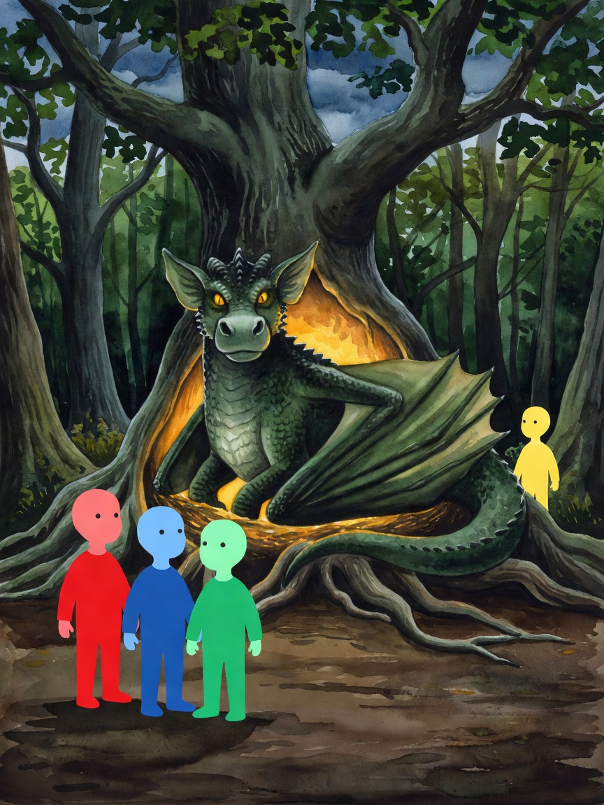
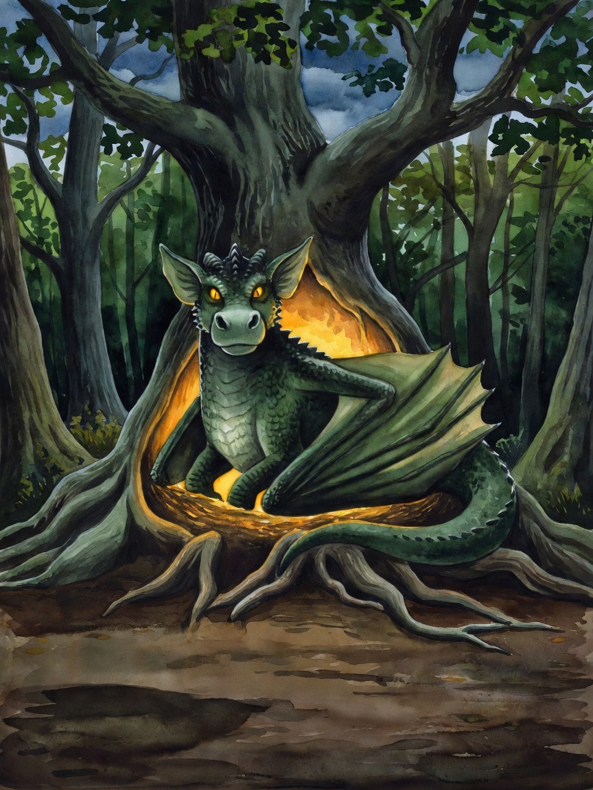
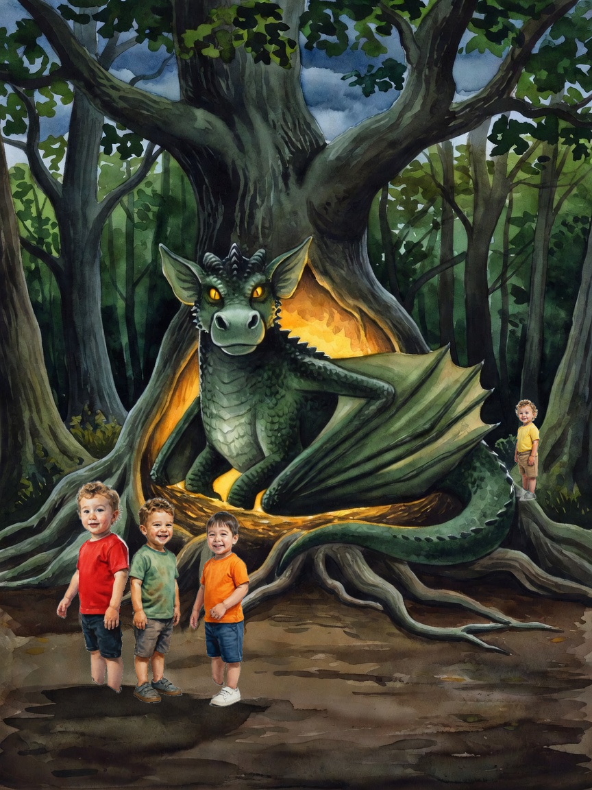
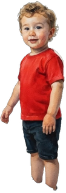
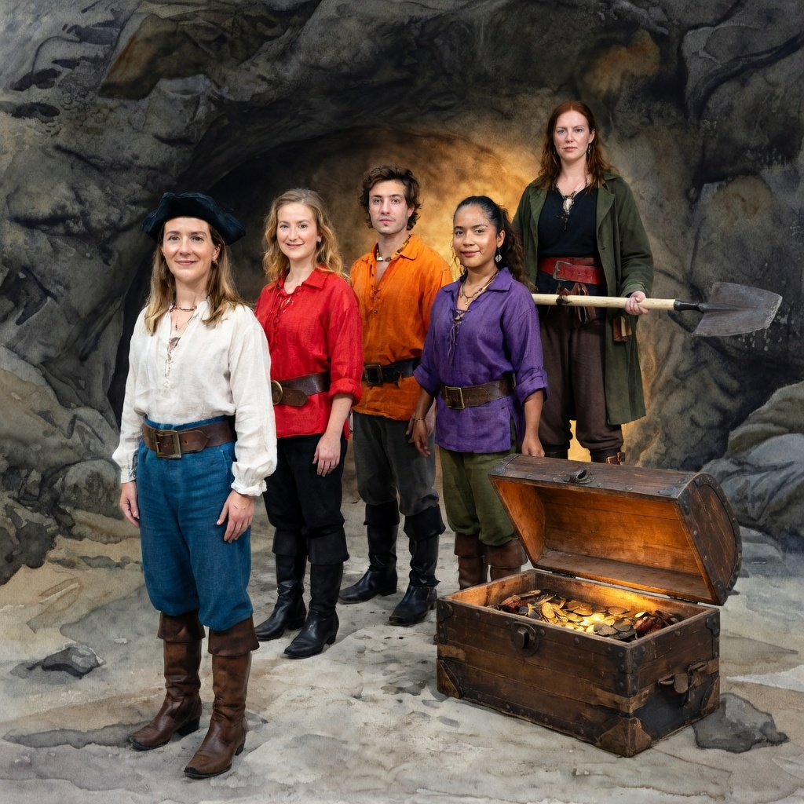
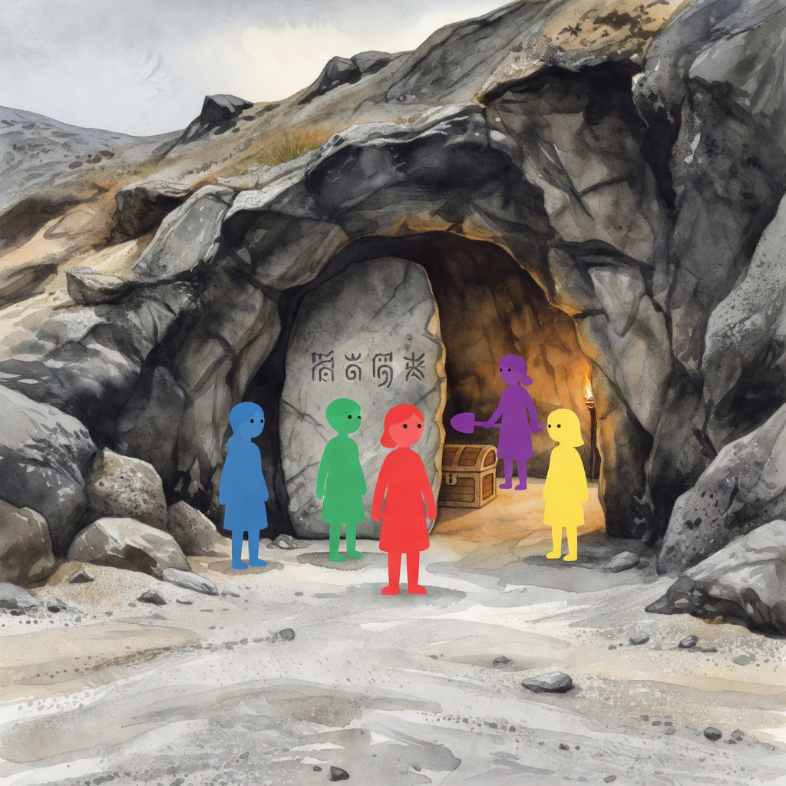
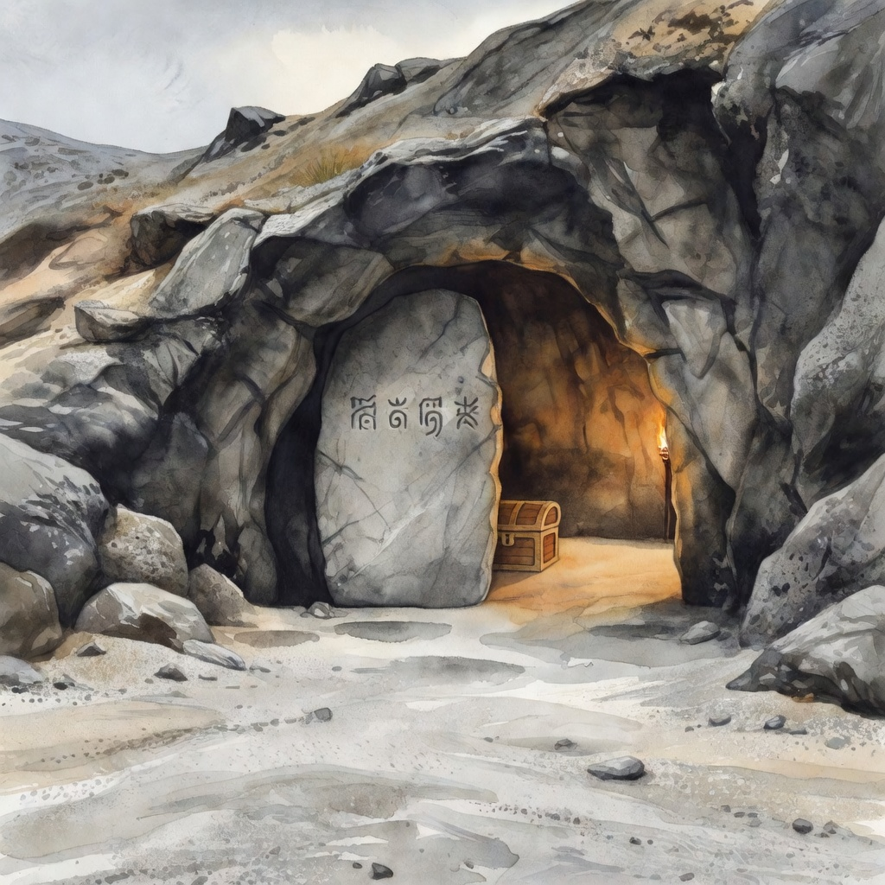

Look at step 1 below: the plate now carries the dragon alongside the four coloured silhouettes. Before the fix the plate prose said “No figures, no animals” and it was never painted.

1 · plate with colour silhouettes

2 · depopulated (silhouettes removed)

3 · avatar cut-outs pasted (raw, pre-blend)

· cut-out used for Levin· cut-out used for Max· cut-out used for Kiaan· cut-out used for Julian
Kapitänin Fiona, page 14 — the VB character REFUSED at 1.43×
Cast built: Fiona, Sarah, Facundo, Lorena + Rossa from her Visual Bible sheet — five figures where the old code produced none.

The page as shipped — direct render

The plate it got to before refusing — five silhouettes including Rossa. Previously this run died at “cast is empty” and produced nothing at all.
1 · plate with colour silhouettes (run aborted after this)

2 · depopulated (silhouettes removed)
The refusal is correct: tallest/shortest figure is 1.43×, under the 2× bar. Grok painted everyone at the same distance, so the declared foreground/background split is not real and there is nothing to correct. The page keeps its original render — but now the plate survives, so you can see the judgement instead of taking my word for it.